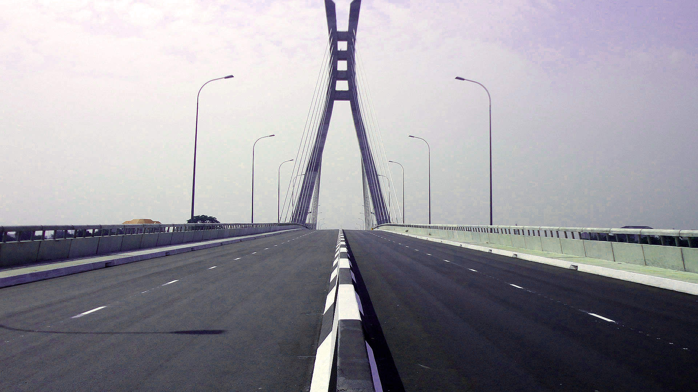
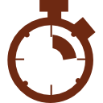

<ion-content padding>
    
    <button ion-button id="navButton" menuToggle>
      <ion-icon name="menu"></ion-icon>
    </button>
    <div id="top">
        
    </div>
    <div id="bottom">
        
    </div>
    <!-- <button (tap)="start()" id="startBtn">
      <span>{{ begin }}</span>
    </button> -->
    <button (tap)="start()" id="remoteBtn">
      {{ begin }}
    </button>
    <div id="counter" #timer> {{ counting }} <span>STEPS</span>
    </div>
    <div id="meta">
        <div><br><span>0.0</span></div>
        <div><br><span>0.0</span></div>
        <div><br><span>0.0</span></div>
    </div>
</ion-content>